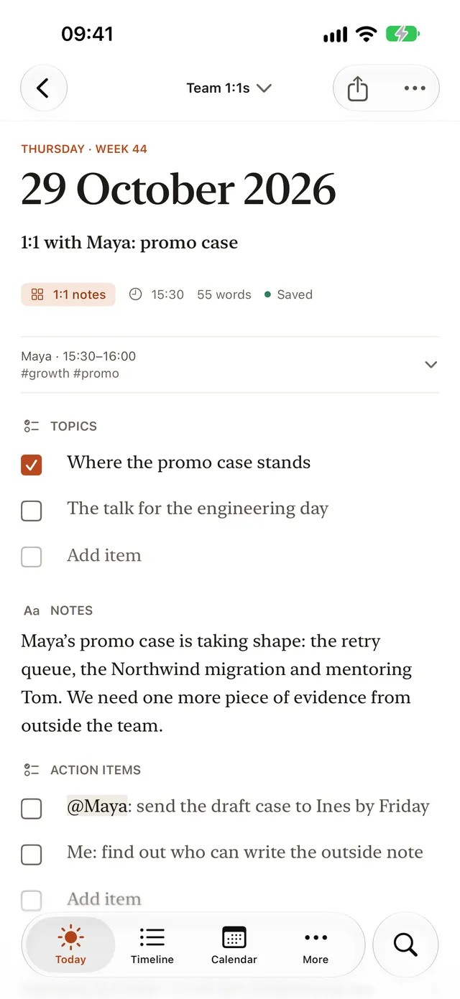
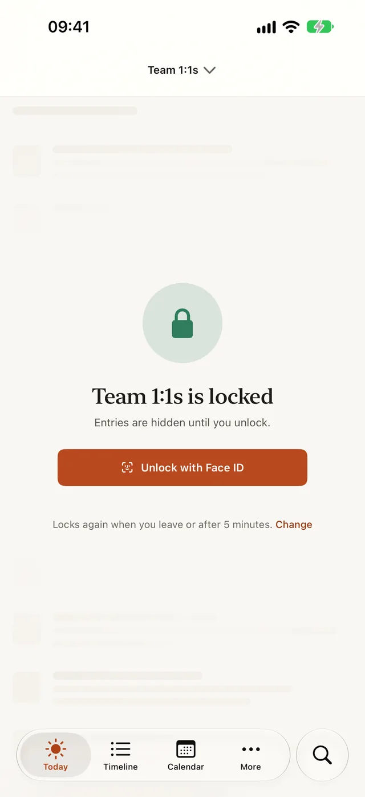

1:1 notes that carry over from one meeting to the next
PUBLISHED 2026-10-16
A 1:1 is one conversation in a long series. What makes the series worth having is continuity: the thing you promised last time, the topic that keeps coming back, the feedback you said you’d follow up on. Notes that start from a blank page every week lose that thread, and the same open items quietly disappear.
This article is a simple method for 1:1 notes that carry over, whether you’re the manager, the report, or meeting a mentor or a peer. The last section shows how Dayfolio carries the open items for you, person by person.
What to keep for each 1:1
Three parts are enough:
- Topics: what you want to cover. Add them during the week as they come up, not in the minute before. Both people can bring topics.
- Notes: what you talked about and what stood out. Not a transcript; a few lines you’ll understand in three months.
- Action items: who will do what, and by when. These are the part that has to survive to the next meeting.
Topics and action items are different things. Topics are an agenda: once you’ve talked about them, they’re done. Action items are commitments: they stay open until someone finishes them.
Before the meeting
- Read last time’s open action items first. Start the meeting with them. Following up on what was promised is how a 1:1 earns trust.
- Look at the topics you collected during the week, and put the most important one first, in case time runs out.
- If you’re the manager, look back further now and then: the feedback you gave, the goals they set, the worries they mentioned a month ago.
During the meeting
- Write less than you think. Decisions, commitments, names and dates are what you’ll need later.
- Write action items as they’re agreed, with an owner. “Look into the on-call load” becomes “Maya: draft a proposal for the on-call rotation by the 20th”.
- Listen first. If writing gets in the way of the conversation, jot a word and fill it in right after.
After the meeting
- Tick what’s done. Leave open what isn’t. It should come back next time without you copying it by hand.
- Add anything you need to do before the next meeting, while you still remember why.
Keep each person’s thread separate
Notes for different people shouldn’t mix. Maya’s open items belong in your next meeting with Maya, not your next meeting with Sam. A running record per person, whether that’s a document each or a tool that keeps them apart, makes sure the right items show up in the right room.
Keep them private
1:1 notes often hold sensitive things: career worries, feedback, health or family circumstances, salary questions. Keep your own notes separate from anything you share, protect them, and leave them out of anything you send to other people. If you share an agenda with the other person, that’s a different document from your private notes.
How Dayfolio helps
Dayfolio is a work journal for iPhone, iPad and Mac. Its 1:1 notes template is in the General pack for any recurring one-on-one, “with a manager, a mentor, a peer or a report”, and it’s the template a journal made from the Management & Leadership pack opens with. Each entry has:
- With, the person you met.
- Meeting time.
- Tags.
- Topics, a checklist: “What do you want to cover?”
- Notes: “What did you talk about, and what stood out?”
- Action items, a checklist: “What’s still open from last time, and what’s new?”
Open items follow the person. A new 1:1 entry starts with Action items empty. As soon as you set With to Maya, the items still unticked on your last 1:1 with Maya fill in. Never Sam’s: each person keeps their own thread. Ticked items stay behind, and the items are copies, so ticking one today doesn’t change last week’s entry. One undo takes the carried items back out. Topics never carries over, because it’s an agenda, not a list of tasks. Tags you used last time with Maya show faintly as Last time, and a tap keeps them.

Start from your calendar. Beside Meeting time, “Fill from calendar…” lets you pick one of today’s meetings and fills in its time and the attendees you already know. Dayfolio reads your calendar on your device, and asks for access the first time. After a meeting ends, Today can offer a card with “Start meeting notes”. A meeting whose title says 1:1, 1-1, one-on-one or 1on1 starts from your 1:1 notes template with the other person in With, so the open items carry over straight away. Someone Dayfolio doesn’t know yet is one tap to add.
See everything about one person. Choose “Entries with Maya” from her name’s menu in an entry to see every entry that names her, across your journals. Above them, Still open lists the action items still open with her. Reading it takes a minute and is good preparation for your next 1:1.

Lock the journal. When you make a journal for people, from the Management & Leadership pack or with 1:1 notes or Skip-level notes as its default template, Dayfolio asks once: “This journal holds notes about people. Lock it?” A locked journal opens with Face ID or Touch ID, or your passcode. Until you unlock it, its entries are hidden everywhere in the app, from the Timeline and Calendar to Search and Reports, and it stays out of widgets, notifications, Spotlight and the app switcher. On iPhone and iPad it locks again as soon as you leave Dayfolio; on every device it locks after five minutes without use (you can change the time) and whenever the device locks.

Keep 1:1s out of your reports. Notes about people, the fields of the 1:1 notes, Skip-level notes and Feedback given templates, start unticked in a new weekly or monthly report, director update or performance review, so your weekly update doesn’t carry them unless you tick them. When you do want them, such as before writing someone’s review, “Make a report” from Entries with Maya starts a Performance review of the last six months about her, with those notes included.
The Management & Leadership pack also has Skip-level notes, whose Follow-ups carry over the same way, and Feedback given, for what you told someone and what you’ll check on next time.
Start with your next 1:1
You don’t need to backfill old meetings. Write your next 1:1 with its action items, and the one after that will start where it left off.
- See the 1:1 notes template, with every field and a filled-in example.
- Read about carry-over and locked journals in the Dayfolio guide.
- Get Dayfolio on the App Store for iPhone, iPad and Mac.